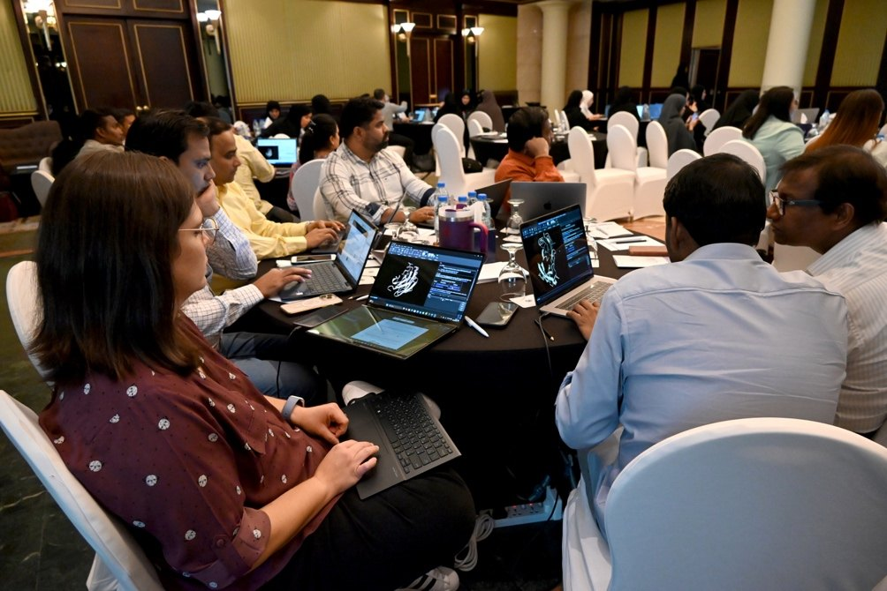
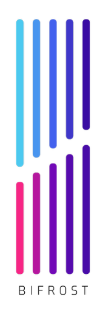

AI in Genomics: Real-World Applications & Opportunities
Espace Zmorda, Soukra, Tunis
ISBS, Sfax
Delivered by GetGenome and The Sainsbury Laboratory, supported through the Bifrost initiative (Kamoun Lab, TSL).
About the workshop
Artificial intelligence is changing how we translate genomic data into biological discovery. This hands-on workshop moves beyond theory to provide practical approaches for researchers in the post-genomic era.
Across two days, participants navigate a complete structural workflow: predicting protein architectures, interpreting molecular interactions and comparing structures across datasets, before bridging into protein design. An underlying thread will be that AI tools are a means to an end, not the end in and of themselves. We aim to build your confidence and skills to turn raw sequences into real-world structural insight.
Before you arrive
Please come to the workshop with the software already installed.
- Install UCSF ChimeraX from https://www.cgl.ucsf.edu/chimerax/download.html, making sure to select the correct version for your computer's operating system (see the list under Other releases).
- Open ChimeraX once to confirm that it launches.
- Create an AlphaFold Server account at https://alphafoldserver.com/.
Full instructions are on the Before you arrive page.
If you run into problems installing or opening ChimeraX, email andres.posbeyikian@tsl.ac.uk before the workshop. Do not worry if it is not resolved by then, as we can troubleshoot together during the session, but it would help if as many of you as possible could have ChimeraX ready beforehand.
You will need to bring your own laptop. Computers are not provided at either venue.
The practical sessions
- Practical 1: Predict · Submit your sequence data to predict models, interpret and compare scores across complexes. Day 1, 11:20.
- Practical 2: Interpret · Introduction to molecular visualisation to interpret protein models and design key experiments. Day 1, 15:15.
- Practical 3: Compare · Align structures to reveal hidden relationships beyond sequence similarity. Day 2, 09:30.
- Practical 4: Design · Design de novo structures and binders against a target to create novel solutions. Day 2, 13:30.
Each session has its own page under Practicals, where we add the slides, worksheets and data files.
Schedule at a glance
The same two-day programme runs at both venues. Full timetable
Day 1 Predict & Interpret
- 08:30 Registration
- 09:30 Welcome & introductions
- 09:45 Introduction to AI for Genomics
- 10:15 Theoretical Introduction to AlphaFold
- 11:20 Practical 1: Predict
- 12:30 Lunch
- 13:30 GOHREP it! Interactive discussions
- 15:15 Practical 2: Interpret
- 17:00 Q&A
Day 2 Compare & Design
- 09:00 Day 2 welcome & registration
- 09:30 Practical 3: Compare
- 11:30 Model your own proteins
- 12:30 Lunch
- 13:30 Practical 4: Design
- 15:05 Genomics in an AI world
- 16:15 Summary
- 16:30 Q&A
- 17:00 Close
Registration opens at 08:30 on Day 1. Arrive in plenty of time, as we begin strictly on time.
The Facilitator Programme
The workshop is co-delivered with the 2026 Facilitator Cohort, researchers supporting the co-delivery of the workshops.

Materials
Slides, worksheets and data files are added to this site during and after the workshop. See Slides & worksheets.
Getting help
Ask any facilitator during the session. For anything about software setup, email andres.posbeyikian@tsl.ac.uk. For anything else, email getgenome@tsl.ac.uk.

In collaboration with CBBC and ISBSSupported through the Bifrost initiative, Kamoun Lab, TSL
#GetGenome #AIinGenomics2026